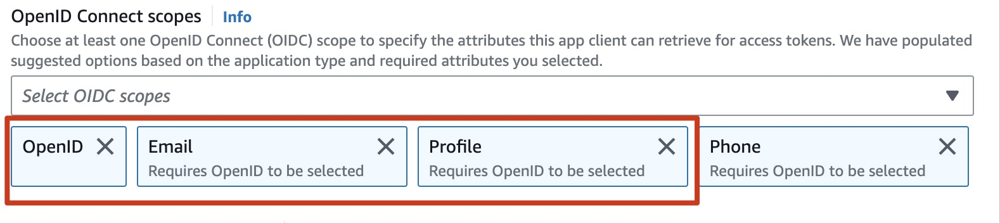
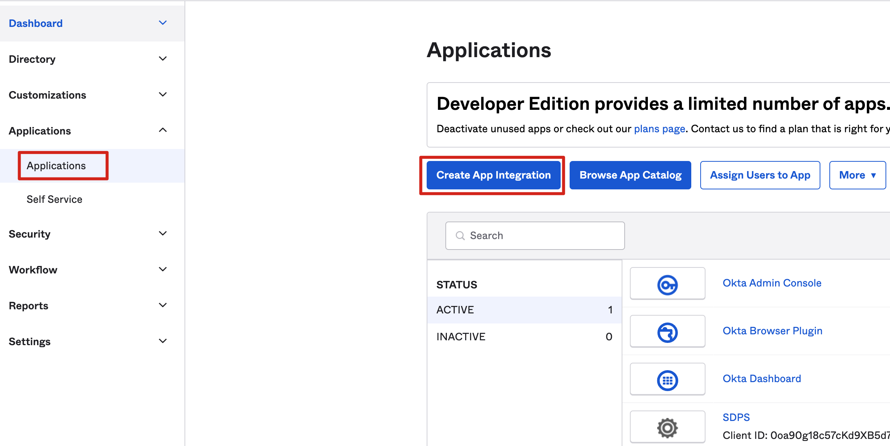
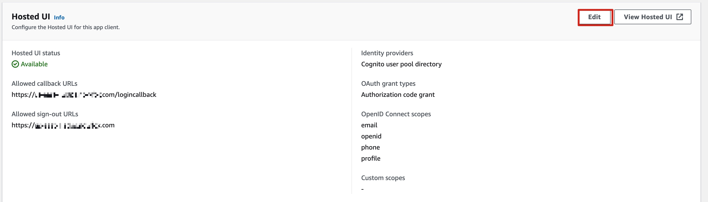

部署步骤
在启动解决方案之前，请仔细阅读本指南中讨论的架构、支持的区域以及其他考虑事项。按照本节中的逐步说明来配置和部署解决方案到您的账户中。
部署所需时间：大约30分钟
部署概述
按照以下步骤在AWS上部署此解决方案。
- 步骤一：创建OIDC应用程序（使用带身份提供商的模板可跳过此步）
- 步骤二：将AWS CloudFormation的Admin模板部署到您的AWS管理员账户
- 步骤三：配置OIDC应用程序（使用带身份提供商的模板可跳过此步）
- 步骤四：配置自定义域名
- 步骤五：访问控制台
- 步骤六：将AWS CloudFormation的Agent模板部署到需要检测的AWS账户
部署步骤
步骤一：创建OIDC应用程序
提醒
使用带身份提供商的模板可跳过此步
您可以使用不同类型的OpenID Connector（OIDC）提供者。本节介绍了选项1到选项3的选项。
-
选项 1：Cognito，使用Amazon Cognito作为OIDC提供者。
-
选项 2：Authing，这是一个第三方认证提供者的示例。
-
选项 3：OKTA，这是一个第三方认证提供者的示例。
选项 1：Cognito
您可以在支持的AWS区域中利用Cognito用户池作为OIDC提供者。
-
根据此指南，使用Amazon Cognito控制台设置托管的UI。
-
创建用户池时，从步骤1到步骤4，根据您的需要进行配置。
-
请确保您在托管身份验证页面区域选择了使用 Cognito 托管 UI。在选择App类型时选择Public client。在选择Client secret时选择Don't generate a client secret。

-
在高级应用客户端设置中，设置OpenID Connect scopes时选择OpenID、Email和Profile。 
-
确认托管的UI状态为Available。确保OpenID Connect scopes包括email、openid和profile。

-
将应用的Client ID、User pool ID和AWS区域保存到一个文件中，稍后将用到。在步骤二：部署管理员堆栈（Deploy admin stack）中，Client ID即为应用的Client ID，Issuer URL为
https://cognito-idp.${REGION}.amazonaws.com/${USER_POOL_ID}
注意：该页面配置的参数Allowed callback URLs和Allowed sign-out URLs将会在步骤三：配置 OIDC 应用中重新配置.


选项 2：Authing
-
转到Authing控制台。
-
在左侧导航栏中，选择Applications下的Self-built App。
-
点击创建按钮。
-
输入Application Name和Subdomain。
-
从Endpoint Information中保存App ID（即Client ID）和Issuer（Issuer URL）到一个文本文件中，稍后将用到。

-
在Protocol Configuration选项卡中设置Authorization Configuration。

-
在访问授权选项卡中，选择可访问的用户。
选项 3：OKTA
-
转到OKTA控制台。
-
点击Applications → Create App Integration 
-
选择OIDC - OpenID Connect → 选择Single-Page Application → 点击Next

-
在受控访问中，选择适合您的方式。

- 从Endpoint Information中将Client ID和Issuer URL保存到一个文本文件中，稍后将用到。
Issuer URL可以在您的个人资料中找到。完整的Issuer URL为“https://dev-xxx.okta.com”。

步骤二：部署管理员堆栈（Deploy admin stack）
- 登录到AWS管理控制台，并使用以下按钮启动 AWS CloudFormation 模板。
| 从 AWS 控制台中启动 | |
|---|---|
| 在新VPC （AWS全球区域）中启动解决方案 |  |
| 在现有VPC （AWS全球区域）中启动解决方案 | |
| 在新VPC（AWS 中国区域）中启动解决方案 | |
| 在现有VPC（AWS 中国区域）中启动解决方案 | |
重要提示
使用现有VPC必须满足以下条件：
- 至少有两个公有子网和两个私有子网。
- 该VPC必须有NAT gateway。
- 两个私有子网都有到NAT gateway的路由。
- 要在不同的AWS区域中启动此解决方案，请使用控制台导航栏中的区域选择器。
- 在Create stack页面上，验证Amazon S3 URL文本框中显示的正确模板URL，并选择Next。
- 在Specify stack details页面上，为解决方案堆栈分配一个有效且账户级唯一的名称。
-
在Parameters下，查看模板的参数并根据需要进行修改。该解决方案使用以下默认值。
参数 默认值 描述 Issuer URL 指定安全的OpenID Connect URL。最大长度为255个字符。URL必须以"https://"开头 Client ID 指定身份提供商颁发的客户端ID。最大长度为255个字符。使用字母数字或?:_.-/?字符 Public Access Yes 如果选择No，则只能在VPC中访问门户网站。如果要通过Internet访问门户网站，需要选择Yes Port 80 如果已添加ACM证书ARN，建议使用默认端口443作为HTTPS协议的端口。否则，可以将端口设置为80作为备用选项 ACM Certificate ARN (可选)为了通过加密实现安全通信并增强解决方案的安全性，可以添加来自ACM的公共证书ARN，以基于HTTPS协议创建门户网站URL Custom Domain Name (可选)通过添加您自己的域名（例如sdps.example.com），您可以在部署堆栈后通过将CNAME记录添加到该域名来直接访问门户网站。只填写域名，不要填写http(s) -
选择Next。
- 在Configure stack options页面上，选择Next。
- 在Review页面上，查看并确认设置。选中3个“我确认”的复选框。
- 选择Create stack以部署堆栈。
等待约20分钟，以确保创建了所有相关资源。您可以选择“资源”和“事件”选项卡查看堆栈的状态。 - 在“输出”选项卡中，您将看到门户网站的URL和SigninRedirectUri。

步骤三：配置OIDC应用程序（Configure OIDC application）
提醒
使用带身份提供商的模板可跳过此步
将SigninRedirectUriHTTP(S)和PortalUrlHTTP(S)的值分别填入您的OIDC应用程序中的登录回调地址和退出回调地址中。
选项 1：Cognito
- 访问您的用户池。
- 选择App integration。
- 选择Your App。
- 进行以下配置。 
选项 2：Authing

选项 3：OKTA

步骤四：配置自定义域名（Configure custom domain name）
如果在创建堆栈时填写了自定义域名，请将自定义域名的CName设置为CloudFormation输出选项卡中的LoadBalancerDnsNameHTTP(S)值。
- 从Outputs选项卡中获取LoadBalancerDnsNameHTTP(S)作为终端节点。
- 在DNS解析器中创建一个指向终端地址的CNAME记录。
步骤五：访问控制台
- 从Outputs选项卡中获取PortalUrlHTTP(S)的值。
- 在浏览器中输入该值，启动解决方案的控制台。
步骤六：部署Agent堆栈（Deploy agent stack）
您可以选择一个或多个账户部署Agent堆栈，从而检测敏感数据。
-
登录AWS管理控制台，并使用下面的按钮启动AWS CloudFormation模板。
从 AWS 控制台中启动 从AWS全球区域部署 Agent template 从AWS中国区域部署 Agent template -
要在其他AWS区域中启动此解决方案，请使用控制台导航栏中的区域选择器。
- 在创建堆栈页面上，确认在Amazon S3 URL文本框中显示了正确的模板URL，并选择下一步。
- 在指定堆栈详细信息页面上，输入一个堆栈名称。
- 在Admin Account ID字段中，输入管理员帐户的帐户ID（12位数字）。这意味着此帐户将成为由指定的管理员帐户监控的帐户。
- 按照步骤二：部署Admin堆栈中描述的剩余步骤完成Agent堆栈的部署。